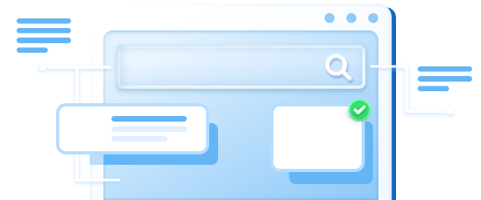

Bedre brugeroplevelse.
Vi finder og løser de fejl, der holder dine brugere tilbage.
Anmod om gennemgangLyder det bekendt?
"Noget føles forkert, men vi kan ikke sætte fingeren på det"
Brugere forsvinder. Feedback er vag. Årsagen er ofte små UX-fejl, der tilsammen skaber et dårligt indtryk.
Fejljusterede layouts og uens mellemrum
Små uoverensstemmelser — men de signalerer et produkt, der ikke er færdigt.
Friktion ved vigtige handlinger
Brugere tøver. Ikke tydeligt, men stille — og det koster konverteringer.
UI-fejl der skader tilliden
En flimrende knap. En formular uden feedback. Ikke nedbrud — men tillidsødelæggere.
Sådan fungerer det
Analyse og klare løsninger.
Vi gennemgår dit produkt og leverer en konkret liste over UX-problemer — med løsningsforslag til hvert enkelt.

Hvad du får
UX Gennemgang
Én fokuseret gennemgang. Konkret output.
- —Gennemgang af dit produkt
- —Identificerede problemer med forklaringer
- —Konkrete løsningsforslag
- —Mulighed for implementeringshjælp
UX Indsigter
Rigtige problemer. Praktiske løsninger.
Det 10px gap der ødelægger dit førstehåndsindtryk
Justeringsproblemer signalerer til brugerne, om dit produkt er til at stole på.
Inkonsekvente knapstile forvirrer brugere
Når knapper ser forskellige ud på tværs af sider, mister brugerne tillid.
Skjulte formularfejl der koster konverteringer
Forsinket feedback og uklare fejlbeskeder driver brugere væk fra din tilmelding.
Klar til en gennemgang?
Del dit site, og vi finder de fejl, der holder dine brugere tilbage.
Kontakt os